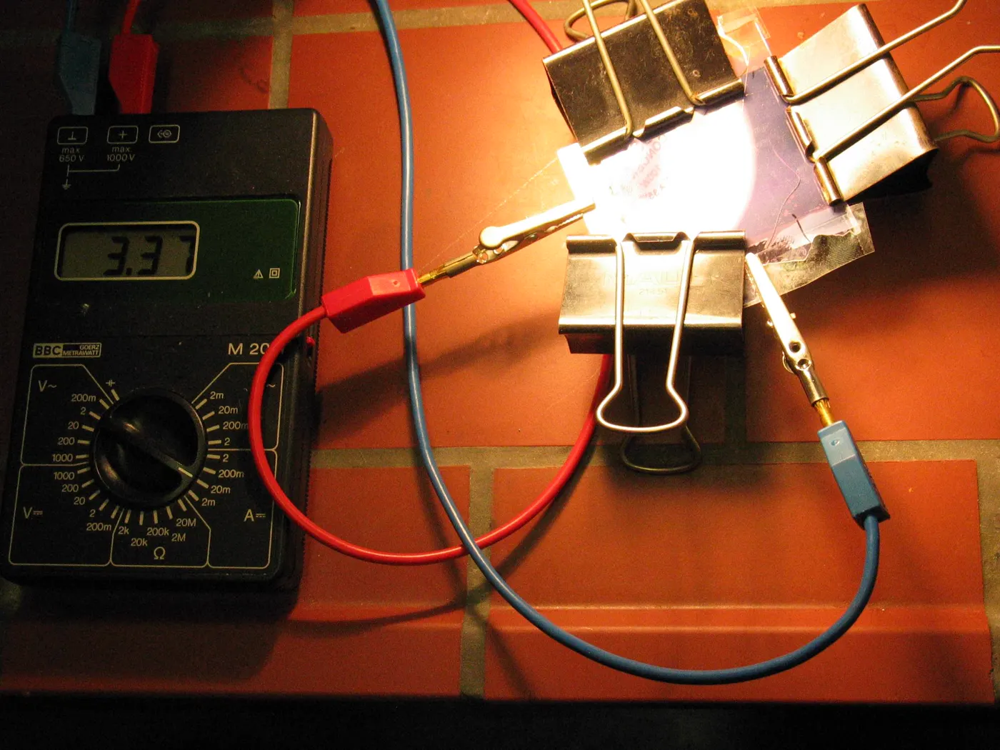

01 · Energie
Farbstoffsolarzelle
In einer Farbstoffsolarzelle – auch Grätzel-Zelle genannt – fängt ein Farbstoff auf einer porösen Titandioxid-Schicht das Licht ein und gibt Elektronen weiter. Die erste effiziente Zelle dieser Art wurde 1991 vorgestellt. [6]
Warum Alterung zählt: Wie lange der Farbstoff unter Licht stabil bleibt, bestimmt die Lebensdauer der Zelle. Forschende entwickeln eigene Verfahren, um viele Zellen gleichzeitig über lange Zeit zu beobachten. [7]
Lichtfänger: Farbstoff